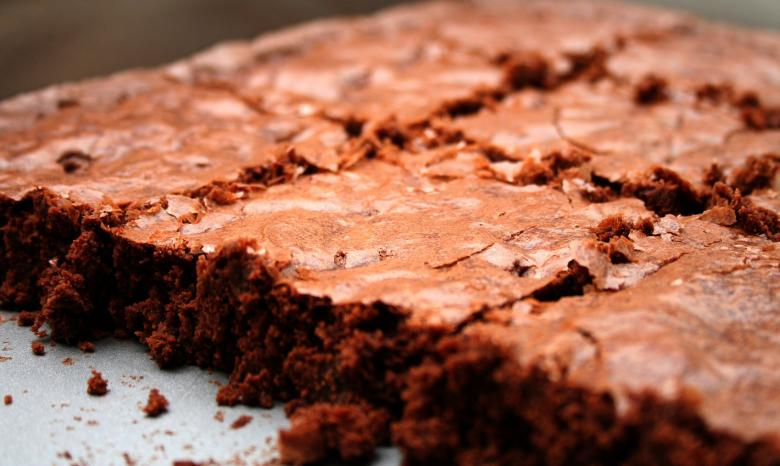

Heart Health: Cocoa's flavonoids may improve heart health by enhancing blood flow, lowering
inflammation, and
reducing blood pressure, potentially decreasing the risk of heart disease and stroke.
Antioxidant Properties: Cocoa is rich in antioxidants like flavonoids and polyphenols, which
combat free
radicals, protecting cells from damage and potentially lowering the risk of cancer and age-related conditions.
Improved Cognitive Function: Cocoa flavonoids may enhance cognitive function by increasing blood
flow to
the
brain, promoting neuroplasticity, and reducing the risk of neurodegenerative diseases like Alzheimer's.
Mood Enhancement:
Compounds in cocoa stimulate the release of neurotransmitters like serotonin and endorphins,
contributing to feelings of happiness, relaxation, and overall well-being.
Blood Sugar Regulation: Moderate cocoa consumption has been linked to improved insulin sensitivity
and
better
blood sugar control, potentially reducing the risk of type 2 diabetes and metabolic syndrome.
Anti-Inflammatory Effects: Cocoa's flavonoids possess anti-inflammatory properties that may help
reduce
inflammation in the body, lowering the risk of chronic diseases such as arthritis and cardiovascular disease.
Skin Health: Cocoa antioxidants protect the skin from UV damage, improve elasticity, and promote
collagen
production, contributing to healthier, more radiant skin.
Weight Management:
Moderate dark chocolate or cocoa consumption may help satisfy cravings, reducing the intake
of less healthy snacks and supporting weight management efforts.
Improved Athletic Performance:
Cocoa flavonoids enhance nitric oxide production, improving blood flow to
muscles, increasing oxygen delivery, and enhancing exercise performance and recovery.
Gut Health:
Cocoa contains prebiotic fibers that support the growth of beneficial gut bacteria, promoting a
healthy gut microbiome and better digestive health.
Recipes
1. Chocolate Avocado Smoothie
Ingridients
1 ripe avocado
1 ripe banana
1 cup (240ml) milk of your choice (dairy, almond, soy, etc.)
2 tablespoons cocoa powder
1 tablespoon honey or maple syrup (optional, for sweetness)
Ice cubes (optional, for a colder smoothie)
Cooking Instructions
Cut the avocado in half, remove the pit, and scoop the flesh into a blender.
Peel the banana and add it to the blender.
Pour in the milk, add cocoa powder, and sweeten with honey or maple syrup if desired.
Add ice cubes if you prefer a colder smoothie.
Blend all the ingredients until smooth and creamy, scraping down the sides of the blender if necessary.
Taste the smoothie and adjust sweetness or cocoa powder as needed.
Pour the smoothie into glasses and serve immediately.
2. Classic Chocolate Brownies
Ingridients
1/2 cup (115g) unsalted butter
1 cup (200g) granulated sugar
2 large eggs
1 teaspoon vanilla extract
1/3 cup (40g) cocoa powder
1/2 cup (65g) all-purpose flour
1/4 teaspoon salt
1/4 teaspoon baking powder

Cooking Instructions
Preheat your oven to 350°F (175°C). Grease and line an 8x8 inch baking pan with parchment paper.
In a medium saucepan, melt the butter over low heat. Remove from heat and stir in sugar until well
combined.
Beat in the eggs, one at a time, until smooth. Stir in the vanilla extract.
In a separate bowl, sift together the cocoa powder, flour, salt, and baking powder.
Gradually add the dry ingredients to the wet mixture, stirring until just combined. Be careful not to
overmix.
Pour the batter into the prepared baking pan and spread it evenly.
Bake in the preheated oven for 20-25 minutes or until a toothpick inserted into the center comes out
with moist crumbs, not wet batter.
Allow the brownies to cool completely in the pan before slicing and serving.